Hello California's Great America. We'll see you tomorrow.
For today, we'll be hanging out at Six Flags Discovory Kingdom.
Here's a map of SFDK for you to look at.
I really enjoyed my last visit in 2005, so I was really looking foreward to visiting the park today.
That little mouse should've stayed away from the Mouse Mafia.
Cobra kept rolling back on us in the morning.
Hooray!! The park has opened up to us!!!
First up, we got EAT (Exclusive Animal Time) and got to see Shouka.
You're not Shouka!!
They may not be Shouka, but these dolphins can do some pretty cool tricks.
"Come over here Kevin and give me a great big hug."
"Syke!!!!"
Ok. Now here's the real Shouka.
"Na Na Na Na Na!! I got all the coaster enthusiasts watching me!! Take that Shamu!!!"
Next up was Medusa ERT.
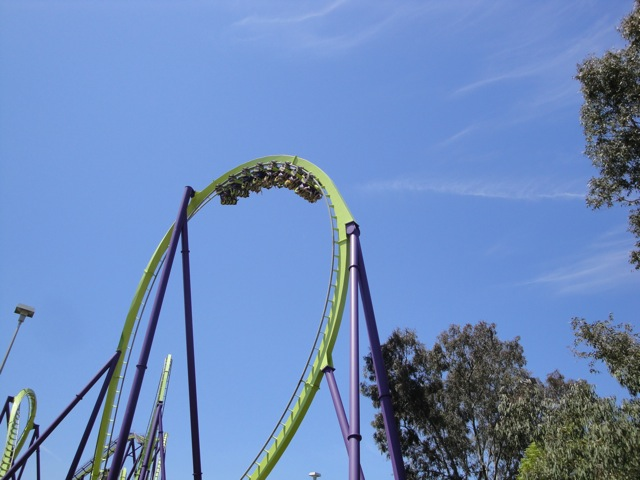
"Dude!! Medusa was hauling ass today!!"
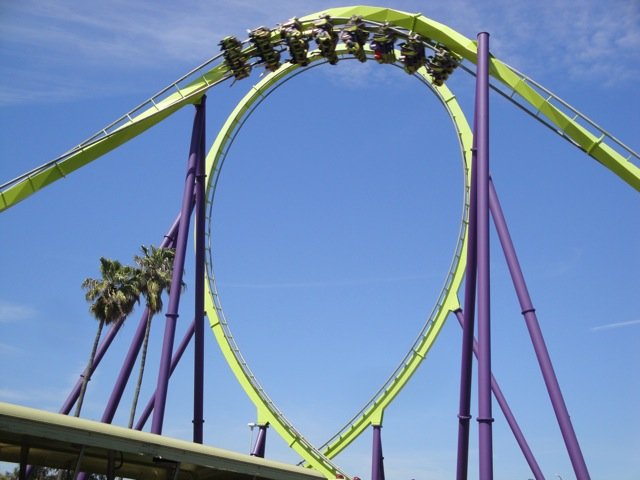
I don't know what I was smoking in 2005, but this was way better than Scream.
After Medusa, we decided to take a ride on Kong.
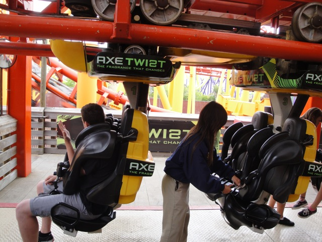
While I HATED the Hair Gel Ads on Viper, I really don't mind these Axe ads on Kong. (Which is ironic, since I also HATE Axe.)
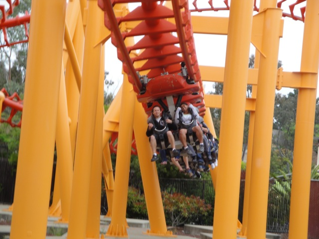
In 2005, Kong was a pretty smooth SLC.
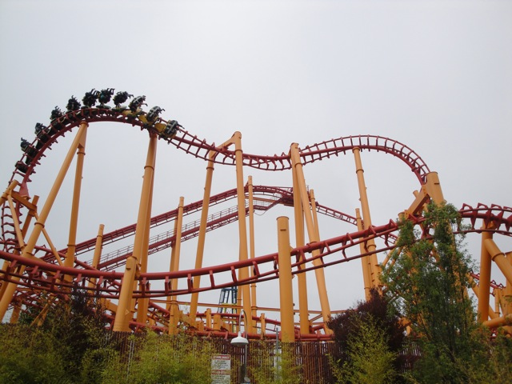
Today however, it beat the living crap out of us.
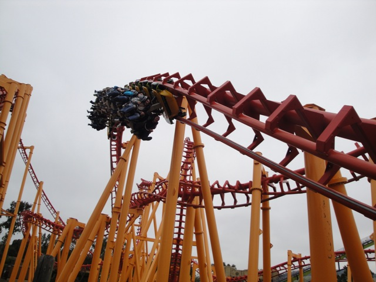
Cody said I should ride Kong up in the front with him. I did. It sucked.
Well, look on the bright side. At least I didn't have to wait a long time to ride this peice of sh*t.
Time for Cody to get his Cobra credit.
"Holy Crap! How long is that train?"
We got our own Private Elephant Show because we're special.
"MINE!!!!"
We even got to play Tug of War with the elephant.
(Photo by Robb Alvey)
Hmm. This elephant feels like leather.
Lunch Time.
Six Flags Discovory Kingdom still has one of my favorite settings in any theme park.
Holy Crap!! The park is crowded today!!
Joining us at lunch today is Mr. Otter.
I see 1 human in a dolphin suit and 4 dolphins in human suits.
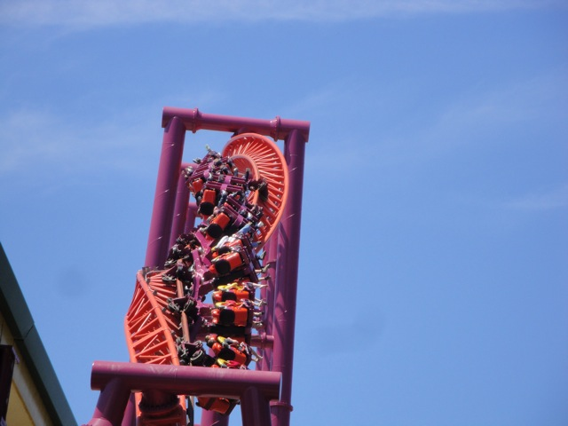
After lunch, I was going to take a ride on V2.
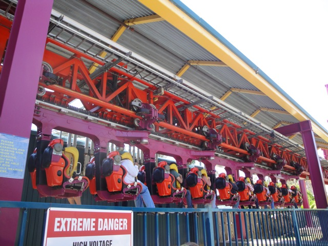
But unfortunetly, it broke down right when I got in line.
Just in case you forgot where we are.
We then headed on over to the Medusa Parking Lot to get shots like this.
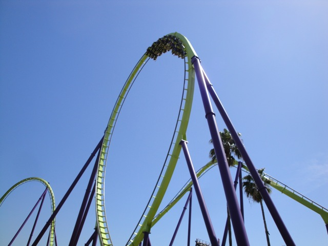
Medusa's got a bigass loop.
Heading into the Dive Loop.
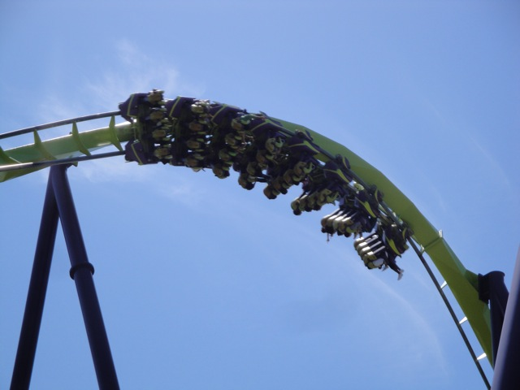
Hey, these are awesome roller coaster pictures, ignore the horrible captions and just look at them.
Medusa's special as it's currently the only B&M to have a Sea Serpent Roll. To be honest, I can see why they didn't catch on.
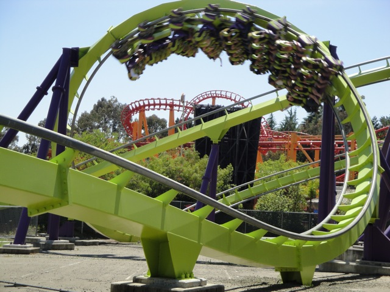
Medusa Goodness.
Cobra and its longass train rolls on by.
All right!!! Time for me to get a new credit!!
Credit #164.
It felt a lot like Primeval Whirl during this part where it spun around through switchbacks.
Twisty First Drop Goodness.
To be honest, I prefer Sierra Sidewinder to this as it seems faster and definetly has a better flow to it.
But Tony Hawk is still a really good spinning coaster and I'm definetly looking foreward to riding the St. Louis Tony Hawk this summer.
Tony Hawk Spinniness.
All right!!! I'll see you later tonight where I'll be riding you with a cup of water.
Oh yeah. They also have Roar here.
Roar was a much better woodie than I remember from 2005.
It had a lot of forces and laterals.
It had a lot of curvy drops.
It even had some airtime.
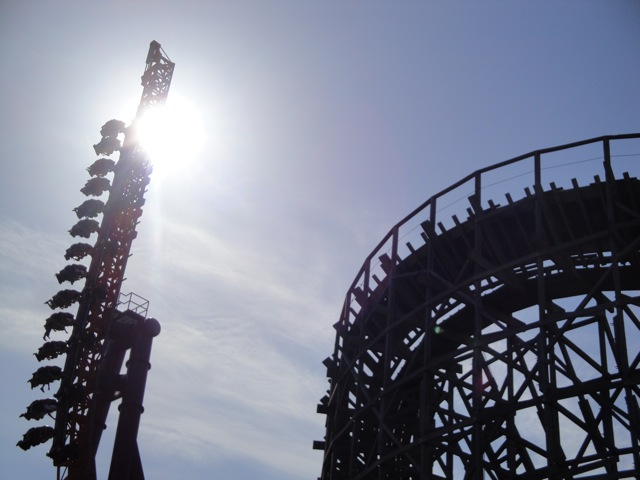
Roar vs V2!!! FIGHT!!!!!!
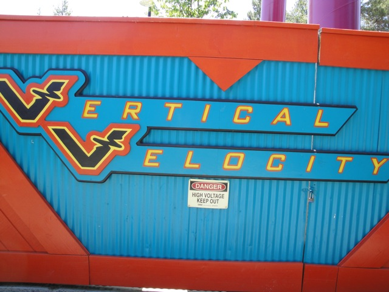
Speaking of V2, it opened back up.
The good news is that V2 is just as awesome as I remember it was.
V2 is one kickass ride.
That inline twist provides some of the best hangtime around.
While I wish it had a holding brake, oh well. It's not a big deal.
After Kong, I was really dreading this.
But unlike Kong, which is now one of the worst SLCs, This Boomerang remained one of the best Boomerangs.
It had a lot of force, was smooth as glass, and was a boatload of fun.
Hey. It doesn't look nearly as bad as the Stride Ads do on El Toro.
We then decided to go and see the Tiger Show.
Aww. It's so cute it makes my head want to explode.
"Screw the meat. I'm going to eat that guy's head right there."
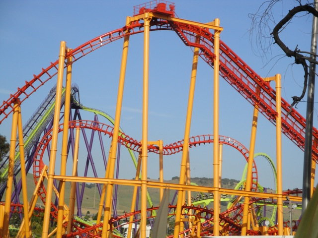
Kong from the Tiger Show.
More Medusa Goodness.
For dinner, I got the Kingdom Fries. Now here's the thing. Why hasn't anyone said anything about these? Everyone talks about Kennywood's Famous Potato Patch Fries. Well these are just as good, if not better. So how come no one has said a damn thing about them!!?
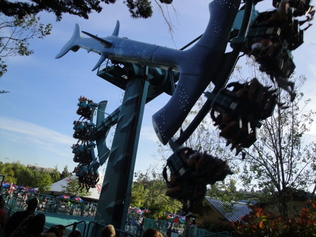
A couple weeks ago, we rode Footloose @ the Santa Barbara Fair, which was awesome.
While Footloose was good, Hammerhead was just simpley awesome.
Later, we went to go see the sharks.
Ahh Crap. We've got sharks in our Ventura Waters.
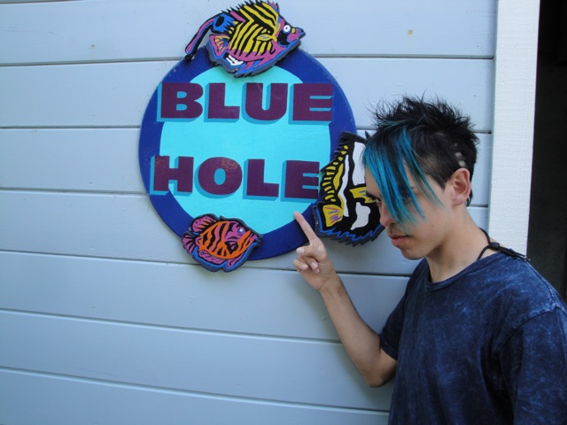
No caption needed.
If my lunch is launced, then it must be a credit.
Hello Scream. I do not miss you. I've got Medusa here. You're not needed @ SFDK.
"You Fail."
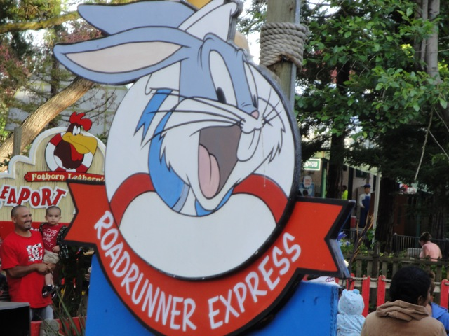
Credit Whoring Time.
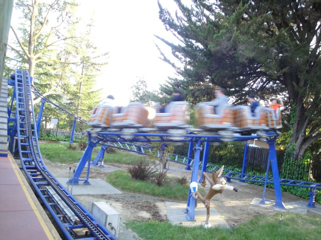
Luckily I got the credit back in 2005, so I didn't have to put myself throught the humiliation. (Though I wouldn't have, even if I didn't have the credit. So it really doesn't matter.)
Cha Ching!! Erica gets another credit.
"How's it going Bugs and Daffy!!!"
Time to get back on the frisbee.
"This is just an ordinary Huss Frisbee. Right?"
Nope! This Frisbee is f*cking insane!!!
We took one last ride on Medusa before our ERT began.
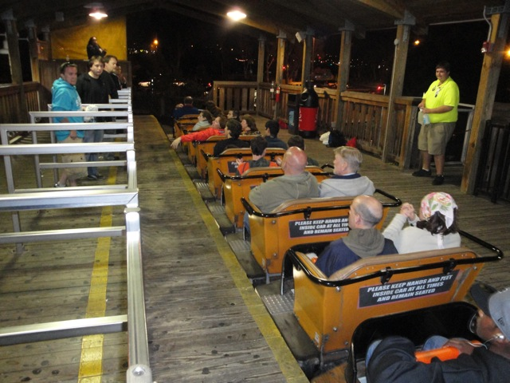
We got some sweet ERT on Roar.
And V2.
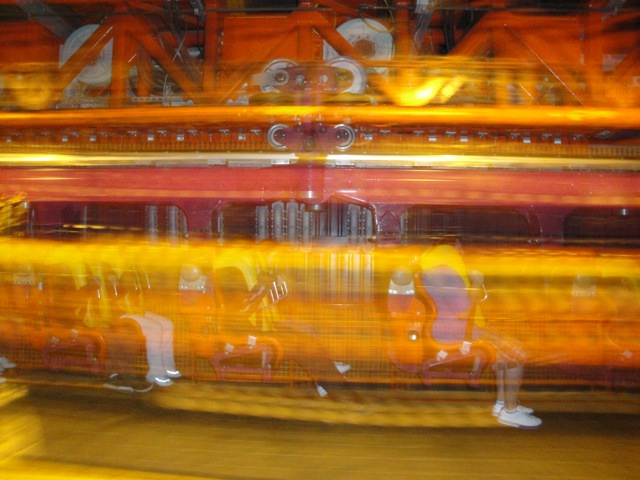
I managed to get 6 rides in during ERT. (Cody got 12.)
And of course, we've got the Tony Hawk Water Challenge.
The Water Challenge was awesome. I didn't get too wet as I was one of the lucky ones that Robb didn't dump a cooler of water on. Well, today was awesome.